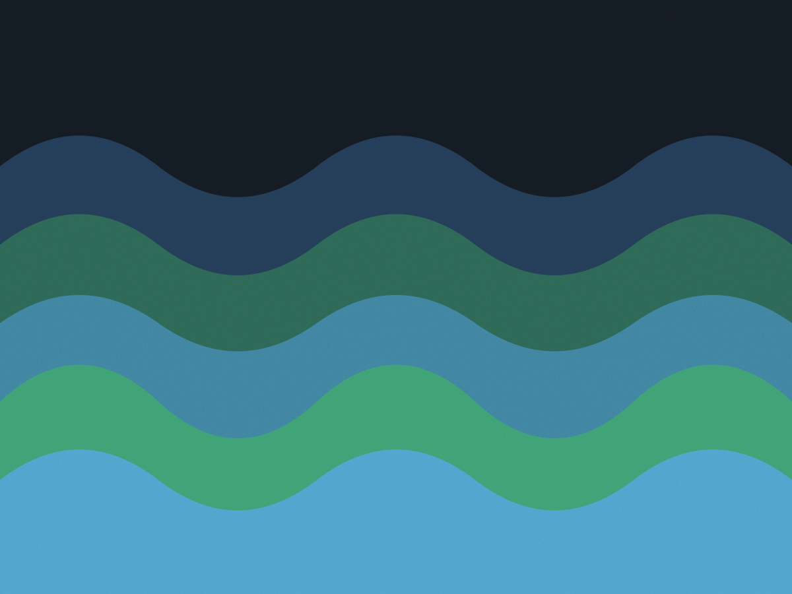
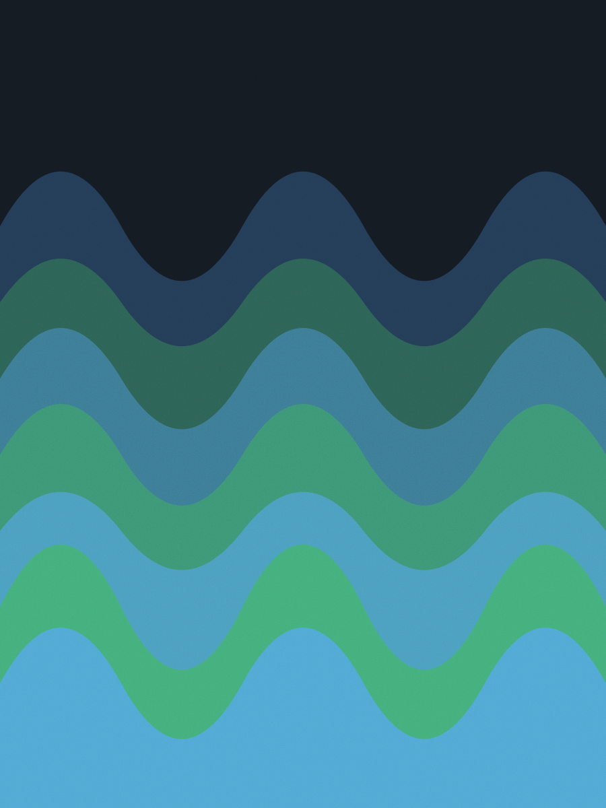
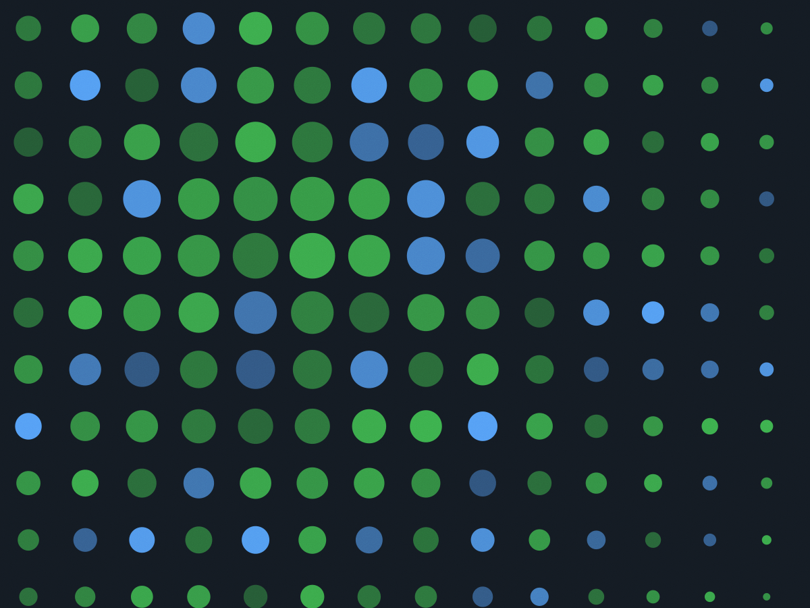
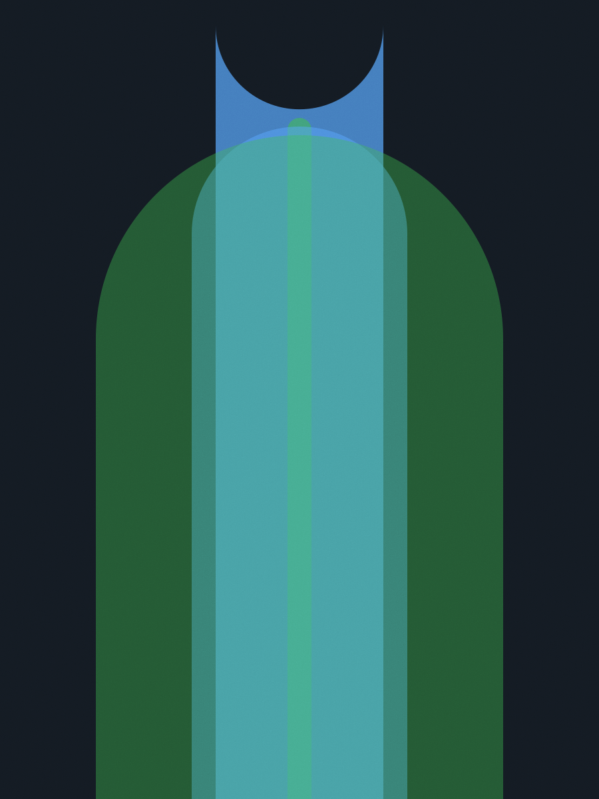

Oito anos escrevendo interface em React e TypeScript. Passei os
últimos dois mantendo o design system da Vitta: 38 componentes,
dois temas e 41 kB gzip de CSS no pacote final.
atuaçãobibliotecas de componente, a11y, performance
stackReact 18 · TypeScript · Astro · Vite
forma20 h por semana, contrato de 3 meses
idiomapt-BR e inglês (times em Berlim)

capa do pacote v2.4.0 do DS da Vitta · 38 componentes, 190 stories
02 / projetos
Três projetos, com o que quebrou no meio
Cada bloco traz o papel que eu tive, a stack e o número que o time
usou para decidir se valia continuar. Os repositórios abertos
estão no fim da lista.
Vitta DS
2023 – 2024 · pacote privado
O time tinha quatro botões diferentes e três tons de cinza para o
mesmo fundo. Comecei pelo inventário: 120 capturas de tela, uma
planilha e a decisão de cortar tudo que não era usado em duas
telas ou mais.
O primeiro componente foi o campo de formulário, porque era o que
mais aparecia. O guia de contribuição veio antes do segundo.
No fim, 9 telas migradas sem reescrever regra de negócio.
React
TypeScript
Radix
Storybook 7
Vitest
papel
design system e implementação
artefato
38 componentes, 2 temas
bundle
41 kB gzip de CSS
testes
190 stories, 64 testes de unidade

Painel do produtor
2023 · Nexo Agro · 4 meses
O produtor rural abria o painel no 3G do campo e esperava dois
segundos por uma tabela de doze mil linhas. Troquei a listagem por
virtualização e movi o filtro para o servidor, com debounce de
300 ms na busca.
A primeira renderização caiu de 2,1 s para 0,8 s no 3G simulado do
Chrome — medido no mesmo aparelho, com o mesmo arquivo de dados.
Depois disso é que escrevi os 48 cenários de teste com Playwright.
React 18
TanStack Table
Zod
Playwright
papel
front-end e revisão de acessibilidade
tabela
12 mil linhas virtualizadas
a11y
navegação por teclado em 100% das ações
testes
48 cenários end-to-end

Portal do Instituto Canaã
2022 · projeto fechado
Noventa e seis páginas de conteúdo, feitas por três pessoas que não
programam. Escolhi Astro porque o site é texto: as páginas saem em
HTML puro, sem JavaScript no conteúdo, e o build inteiro leva 40
segundos na máquina da equipe.
A parte chata foi o editor de texto do CMS devolvendo marcação
suja. Escrevi um sanitizador de 120 linhas no build e um teste de
contrato que quebra quando chega tag fora da lista.
Astro
Markdown
Sanitize-HTML
Lighthouse CI
papel
arquitetura e implementação
páginas
96, geradas em HTML estático
javascript
0 kB nas páginas de conteúdo
nota
Lighthouse 98 em performance no mobile

repositórios abertos
cadernos-de-campoapp de anotação offline, PWA com IndexedDB2021 · TypeScript
focus-ringhook de foco visível para teclado, 1,4 kB2022 · React
tabela-a11yexemplos do que falei na BrazilJS 20232023 · HTML
03 / stack
O que eu uso e desde quando
Só entra na lista o que já sustentou um projeto em produção por mais
de seis meses. O resto fica no rascunho.
Ferramentas, para que servem e desde quando uso
ferramenta
uso
desde
TypeScript
todos os projetos, modo estrito
2019
React 18
interface de produto
2018
Astro
site de conteúdo e blog
2022
Vite
build e servidor de dev
2021
Vitest
teste de unidade e de componente
2022
Playwright
teste end-to-end e de teclado
2022
Storybook
catálogo e revisão de estado
2020
axe-core
checagem de acessibilidade no CI
2021
CSS puro
camada de token, sem framework
2016
notas de versão do DS
v2.4.02024-03 · tema escuro estável, 38 componentes
v2.1.02023-11 · campo de seleção com busca, 3,2 kB
v1.8.22023-06 · correção de foco no modal e no menu
v1.0.02023-02 · primeiro pacote publicado no registro interno
04 / sobre
De Recife, com fuso de três horas a menos
Formei em ciência da computação na UFPE em 2016 e comecei
escrevendo front-end de sistema de saúde, onde o formulário tinha
80 campos e o usuário era uma enfermeira em pé, com pressa. Aprendi
ali que acessibilidade não é item de checklist: é a diferença entre
alguém conseguir registrar um plantão ou não.
Desde 2019 trabalho remoto, com sobreposição de quatro horas com
times na Europa. Prefiro entrar em projeto que já tem produto no ar,
porque dá para medir antes e depois — e prefiro trabalhar junto de
quem desenha, na mesma sala virtual, em vez de receber tela pronta.
Fora do trabalho, mantenho o tabela-a11y e
dou uma oficina de duas tardes sobre teclado, foco e leitor de tela
em escolas técnicas de Recife.
05 / quem trabalhou comigo
Duas pessoas que revisaram meu código
A Camila escreveu o guia de contribuição antes do segundo
componente. Foi o que fez o design system sobreviver à troca de
metade do time no ano seguinte.
Renata Coelho — gerente de produto na Vitta
Ela entrou no painel com doze mil linhas na tela e entregou uma
tabela que abre em menos de um segundo no 3G do produtor. E
deixou os testes que provam isso.
Diego Matos — tech lead na Nexo Agro
06 / contato
Como começa um projeto comigo
Primeira conversa de 30 minutos, sem proposta comercial. Se fizer
sentido, mando um documento de duas páginas com escopo, prazo e
valor fechado.